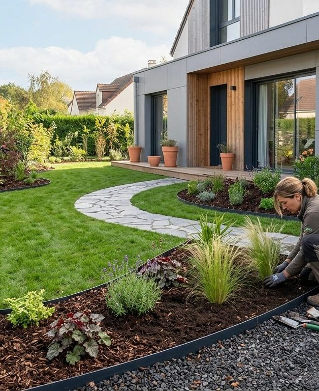

Demande de devis
Parlez-nous de votre projet
Décrivez votre besoin en quelques lignes pour préparer votre demande de devis.
Votre demande est prête
Choisissez comment l'envoyer. Rien n'est transmis tant que vous n'avez pas validé l'envoi.